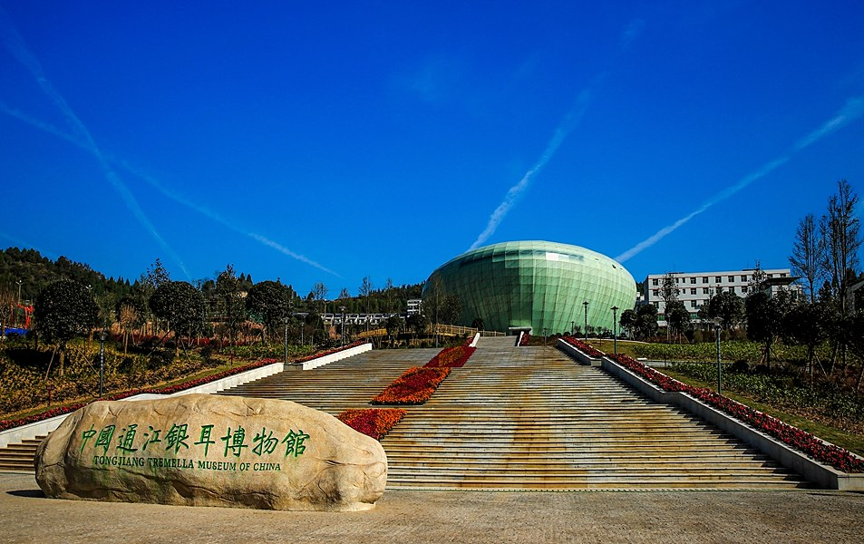
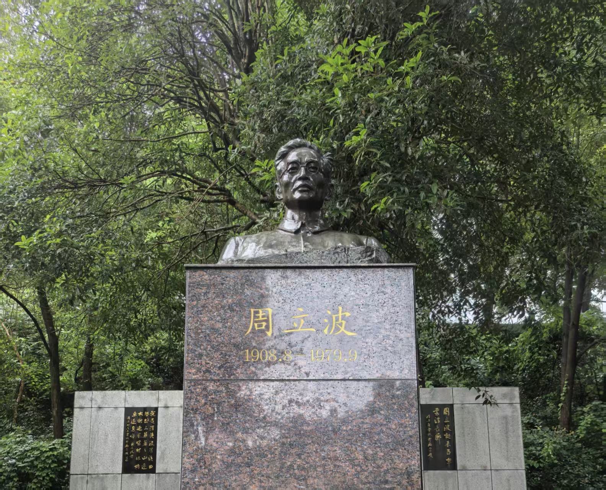

文明留声，古今共鸣
玄光自青铜而生，古镜凝岁月无声。繁复纹样镌刻先民浪漫，清冷镜光流转世代光景。小小铜鉴，照容颜，亦承载绵延不绝的东方古韵。
中卫，宁夏平原的黄河古城。腾格里沙漠与滔滔长河在这里相遇， 驼铃穿越沙海，筏影横渡黄河，让这座边城成为丝绸之路北道上 重要的渡口、驿站与军事要塞。

一座始建于宋代的文庙，到红四方面军总指挥部驻地，再到今天全国爱国主义教育示范基地。一朵银耳沉淀了千年山地农耕智慧，也是巴中独有的、不可复制的本土特色文化名片。
千年三江学府，湖湘文脉源头，四大书院名宗。理学思想在此传播，家国情怀在此孕育，深深影响了整个湘南地区的民风教化，也为后世留存下极为珍贵的文化遗产。

这里不仅是一个作家旧居，更是一个承载时代风云、革命记忆与乡土情怀的精神场域。